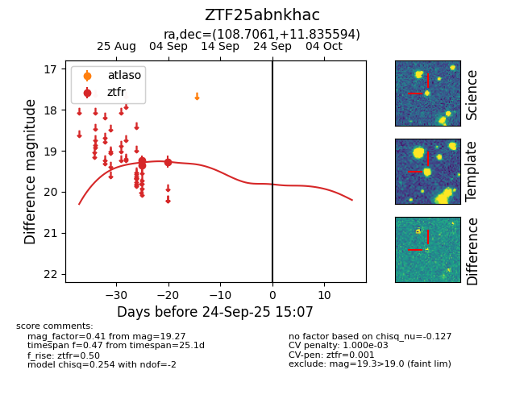
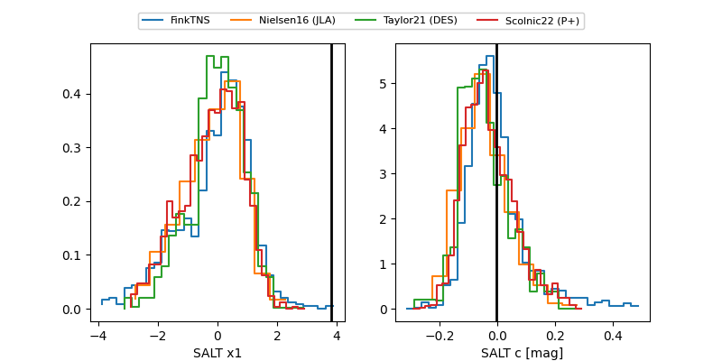

FINK: ZTF25abnkhac
Lasair: ZTF25abnkhac
ALeRCE: ZTF25abnkhac
ZTF25abnkhac (ztf,fink)
equatorial (ra, dec) = (108.7061,+11.83559)
galactic (l, b) = (204.9180,+10.50118)


last ztfr=19.27
3 ztfr detections